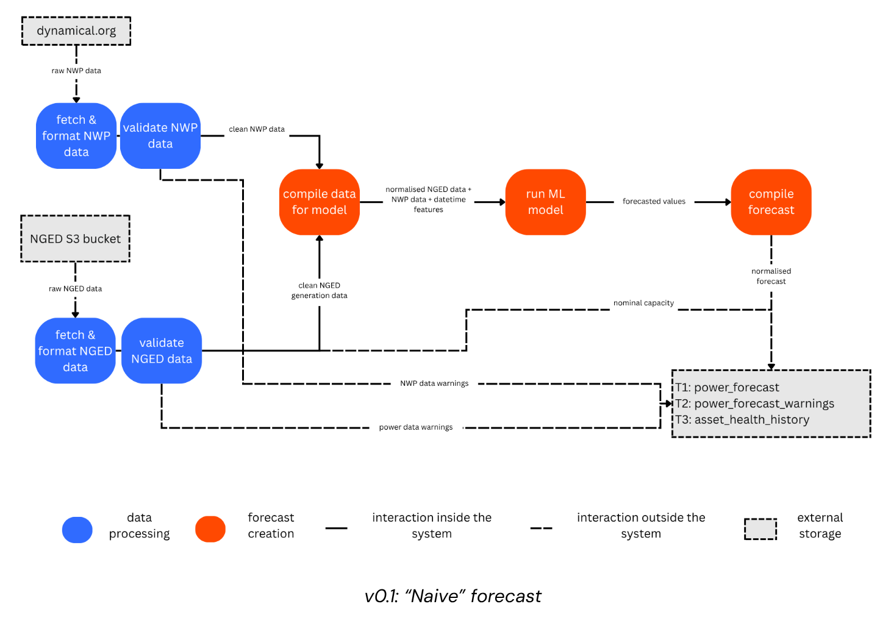
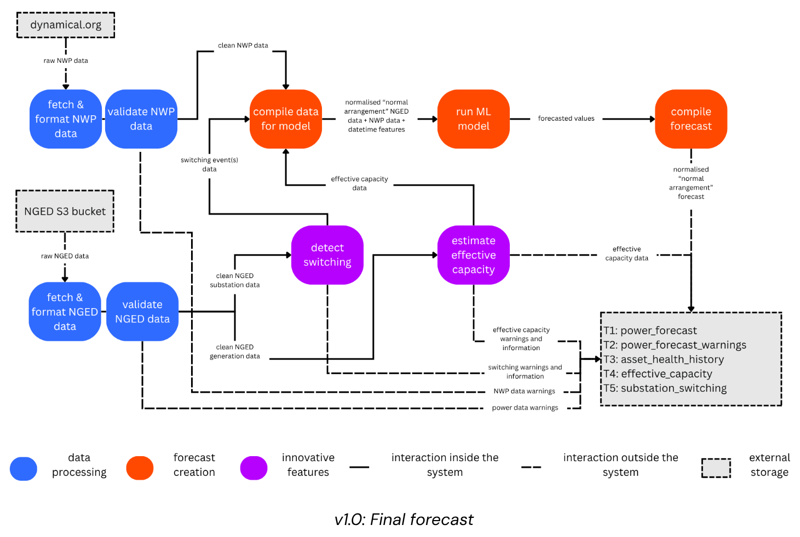

Roadmap
This roadmap outlines the planned order of development toward the v1.0 live forecast release (January 2027) and beyond. It reflects the plan as of the Milestone 1 report (28 May 2026). Technical plans change as we learn more — treat this as a best-estimate, not a guarantee.
Status legend (used throughout these design docs): ✅ Implemented — exists in code today · 🚧 Planned — designed, not yet built · 🔬 Research — exploratory / v2.
How this folder is organised
docs/roadmap/ contains only design for work that is not yet implemented. It is a
forward-looking roadmap, never a mirror of the code. When a feature ships, its documentation
moves out of roadmap/ to its permanent home — architecture/ for system design,
ml_experimentation/ for ML methodology, and so on — and the
roadmap entry shrinks to a one-line pointer. This keeps the roadmap from going stale and gives
each implemented feature a single, durable home.
Design documents
This folder captures the detailed technical plans from the Milestone 1 report, so they can be pointed at when the time comes to implement them.
- Delivery tables — the five Delta Lake tables OCF delivers to NGED
(
power_forecast,power_forecast_warnings,asset_health_history,effective_capacity,substation_switching), with full field-level schemas. - Forecast building blocks — "normal" vs. "prevailing conditions" forecasts, sign conventions, and worked examples.
- Metrics & leaderboard — cross-fold validation protocol, evaluation metrics, horizon time-slices, and leaderboard grouping tags.
- Data sources — NGED power data + supporting files, network topology, and the weather datasets (ECMWF ENS, CERRA, CM SAF).
- Differentiable Physics — DP for effective-capacity estimation of metered generators (v1), and graph-structured disaggregation of net substation power into latent demand and DER generation (v2).
- Switching events — the canonical treatment of switching events and estimating latent demand under the normal running arrangement: the v0.6 unsupervised statistical detector and the v2 mixture models (the graph is a data structure, not a GNN).
- Disaggregation evaluation — the multi-pronged evaluation protocol for the no-clean-ground-truth disaggregation problem (v2).
- Encoders — shared learned encoder modules (WeatherEncoder, TimeEncoder) and why they pair naturally with differentiable physics (v2).
The timeline below shows the order in which this work is planned.
v0.1 — "Naive" MVP (internal only)
Goal: A simple XGBoost forecast that lets us test infrastructure end-to-end and establish a baseline. Intentionally does not detect switching events or estimate effective capacity — hence "naive" (assumes the grid is always in perfect health).
Data engineering:
- Download ECMWF ENS NWP from Dynamical.org; convert to Delta Lake with H3 spatial indexes on S3 ✓
- Download NGED data from S3; convert to Delta Lake with H3 spatial indexes ✓
- Automatic data cleaning:
- Remove isolated zeros in non-zero time series
- Remove values more than N standard deviations from the mean
- Remove "stuck" values (std dev near zero over a 24-hour rolling window)
- Drop first ~2 months of each time series (poor quality during meter ramp-up)
Software engineering:
- Universal model interface (
BaseForecaster) for all ML models ✓ - Orchestrate everything with Dagster: data ingestion, model training, inference, backtesting ✓
ML model:
- Separate XGBoost model per
time_series_id✓ - Train on the ECMWF control ensemble member; run inference on all 51 members ✓
- Features: ECMWF ENS NWP variables, derived weather features (e.g. wind chill), lagged power (7 and 14 days ago), datetime features (
hour_of_day,day_of_week,day_of_month,day_of_year,is_weekend,is_bank_holiday,is_christmas,is_easter,utc_offset,forecast_horizon) - Output: ensemble of 51 half-hourly power forecasts per
time_series_id, scaled to [−1, +1], on a 14-day horizon - Static capacity estimate: 99th percentile of observed power as a simple proxy
Outputs (Delta tables on S3):
power_forecastpower_forecast_warningsasset_health_history

v0.2 — Code Quality & Documentation
- More unit tests
- CI on GitHub
- Improve documentation
- Verify daylight savings time handling is correct
v0.3 — Leaderboard / Performance Analysis
- Implement the ML energy forecasting "leaderboard" (cross-fold validation metrics in MLflow), ready for systematic ML experimentation ✓ (CV assets added)
- Metrics: normalised MBE, normalised MAE, RMSE, Pinball loss, PICP, CRPS, Spread-Skill Ratio
- Time-slice filters: nowcasting (0–6 h), day-ahead (6–36 h), medium range (Day 2–7), extended range (Day 8–14), peak events (top 5%)
v0.4 — Improved Automatic Data Cleaning
- More sophisticated automatic cleaning of NGED's power data (building on the basic cleaning in v0.1)
v0.5 — XGBoost Upgrades ("Quick Wins")
Establish a strong XGBoost baseline before investing in capacity estimation and switching event detection.
Ideas to test (informed by literature review):
- Train a "global" XGBoost model across each category of time series (e.g. one model for all MW primary substations, one for all MVA primaries, one per generator type) instead of one model per
time_series_id - Train separate XGBoost models per forecast horizon window (e.g. 0–2 days, 2–7 days, 7–14 days)
- Train on all 51 NWP ensemble members (may require XGBoost's iterator API to handle data that doesn't fit in RAM)
- Pre-train XGBoost on CERRA reanalysis (which covers 2020–2024, before our ECMWF dataset starts), then fine-tune on ECMWF ENS
Automated experimentation ("auto-research"):
Once the leaderboard (v0.3) is stable, we plan to drive hyperparameter and feature search with an LLM agent in the style of Karpathy's "auto-research": the agent programmatically registers experiments, materialises them, reads the MLflow leaderboard, and iterates — with no human in the loop and no Dagster UI in the path. (This may have to wait until v2).
The ML-assets architecture is designed to support this from day one (programmatic experiment registration, MLflow as a machine-readable leaderboard, a manual retirement job to prune the experiment catalogue). The one piece to add when we start is a thin Python/CLI surface for "fetch the aggregate leaderboard metrics for experiment X" so the agent reads results without scraping the UI.
v0.6 & v0.7 — Switching Events & Dynamic Generator Capacity
Internal only for first month, then shared with NGED.
Switching events:
- Detect "abnormal running arrangement" events from the power time series alone, using statistical methods
- Use the detected switching events to clean training data: train XGBoost only on "normal arrangement" periods
- Populate the
substation_switchingDelta table
Dynamic effective capacity estimation for metered generators (differentiable physics):
- Implement a basic differentiable physics (DP) model for the metered wind and solar PV generators to estimate their physical parameters — most importantly effective capacity at each half-hourly timestep, which bumps up and down with maintenance, faults and build-out (this is Phase 1 of the DP plan). The "clever" latent-demand and abnormal-running-arrangement inversion is explicitly not in scope here — that is v2 research.
- Two-pass approach: first pass estimates effective capacity; second pass normalises the time series by effective capacity before training the power forecast model
- Ingest additional weather datasets needed for capacity estimation:
- CERRA (Copernicus regional reanalysis) — high-resolution historical weather, useful for pre-training and for estimating historical generator capacity
- CM SAF (Satellite Application Facility on Climate Monitoring) — high-resolution satellite-derived irradiance, used to estimate solar PV capacity
- Populate the
effective_capacityDelta table
Dynamic effective capacity estimation for substations:
- For now, while we're forecasting substations top-down, just use the 99th percentile per year as the effective capacity. Later, in v2, the system should already capture everything we need to know about substation capacity, as a function of all the things that drive the substation's behaviour.
"Prevailing conditions" building block:
- Produce example Python code for NGED to construct a "prevailing conditions" forecast from OCF's building blocks
v1.0 — Stable Live Service for NGED's Trial Area
Target: January 2027
- All features listed above (v0.1–v0.7), plus fixes discovered during live running
- 32 time series in the NGED trial area: 16 primary substations, 6 solar PV farms, 3 wind farms, 2 GSPs, 2 BSPs, 1 biofuel generator, 1 BESS, 1 reciprocating gas generator
- Five Delta Lake output tables delivered to NGED every 6 hours:
power_forecast— [−1, +1] ensemble power forecastspower_forecast_warnings— per-time_series_idwarnings (HEALTHY, MISSING VALUE, STUCK TIMESERIES, INVALID TIMESERIES VALUE, GENERATOR OR CIRCUIT FAULT, GENERATOR REDUCED CAPACITY, SUBSTATION ABNORMAL RUNNING ARRANGEMENT, STALE NWP, STALE POWER)asset_health_history— complete historical record of each time series's health stateeffective_capacity— half-hourly probabilistic generator capacity estimates (mean + std)substation_switching— estimated power diverted between substation pairs (mean + std)

v2.0 — Scale-Up (Future Research)
Required:
- Scale to approximately 2,500 time series: all of NGED's primary substations (1,161), BSPs (271), GSPs (52), and most customer meters (~1,000)
- Estimate the installed capacity of unmetered solar PV and wind on each primary substation (by disaggregating net primary substation power flows)
- Compare top-down forecasts vs. bottom-up forecasts for BSPs and GSPs
Research (advanced ML):
- Graph-structured disaggregation: Model substations, metered generators, and unmetered generator fleets as nodes in an electrical/spatial graph, with edges representing physical connections. The graph is a data structure — a structural prior on who can exchange load and which sites share weather — not a trained graph neural network: each substation is reconstructed as a sum of per-site differentiable-physics modules with inferred capacities, and cross-site gains come from hierarchical parameter sharing rather than message passing. A trained GNN remains an optional, residual-driven escalation. (This is Phase 2 of the DP plan — see Differentiable Physics §8 and Switching events, Part 2.)
- Latent-demand recovery under switching: reconstruct the demand each substation would have metered under the normal running arrangement, using a time-varying neighbourhood mixture (optionally type-resolved into demand / PV / wind) over the network graph. This reconstructs the topology-normalised demand NGED requires, and goes beyond the v0.6 statistical detector — which only flags and masks switching periods. See Switching events & latent demand.
- Pre-trained neural network encoders: "weather encoder" and "time encoder" pre-trained on large datasets, then fine-tuned for substation forecasting
- Multi-sequence alignment with axial attention: find "similar" historical days and feed them as additional context to the forecasting model
- CRPS training objective: train the ensemble power forecast model to directly optimise CRPS for sharper probabilistic forecasts
- JEPA (Joint Embedding Predictive Architecture, à la Yann LeCun): adapt to demand forecasting using JEPA's encoder and predictor as the "load" module in the graph-structured disaggregation engine
- Differentiable physics for power forecasting (not just capacity estimation): use DP models to directly forecast power, handling MVA metering natively (the Phase 2 capability — see Differentiable Physics §8 and §10)
- Additional NWP sources (far from certain that we'll get round to this): explore whether adding further NWP sources — e.g. ICON-EU from Dynamical.org — improves forecast skill over ECMWF ENS alone. Sources with shorter history than the canonical CV folds (ICON-EU starts early 2026) cannot enter the leaderboard directly; they are first assessed via a controlled ad-hoc ablation, and only promoted to a new leaderboard epoch once they have ~1–2 complete years of history
Stretch goals:
- Forecast unmetered solar and wind power at each primary substation
- Disaggregate additional DERs (price-sensitive assets like batteries) from substation power flow
- Estimate cost savings (£) attributable to each forecasting approach in the leaderboard
- Build a REST API on top of the Delta Lake delivery mechanism